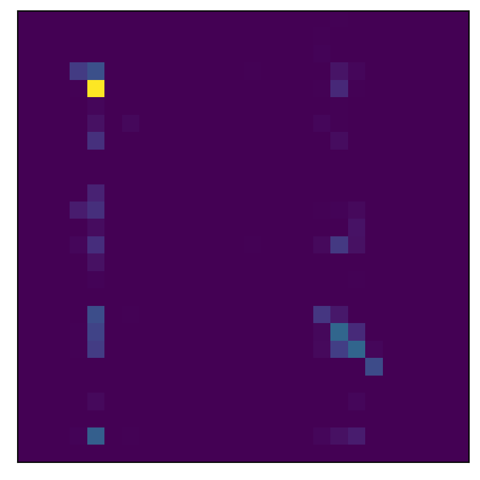

print("üòâ")
print("\N{WINKING FACE}")
print("\U0001F609")üòâ
üòâ
üòâComputers represent characters via character encodings. Basically, a mapping from a binary representation to a character symbol value. There‚Äôs many character encodings and most often our text system autodetects them.
Character encodings existed a long time before computers, since people seem to always want to represent letters as numbers. On a computer, the program has to interpret the character code and display it in a way that we want. ASCII represents characters as 7 bits, (unicode) UTF-8, UTF-16 and UTF-32 represent characters as 8, 16, and 32 bits. Of course the greater the bit representation, the larger the character set that can be represented. ASCII contains only the usual keyboard characters whereas Unicode contains much more.
Here’s some info about python unicode. For example, python’s default character encoding is UTF-8. So strings automatically allow UTF-8 characters
print("üòâ")
print("\N{WINKING FACE}")
print("\U0001F609")üòâ
üòâ
üòâUnicode characters can be variable names, but emojis can‚Äôt. (However, see here where they magically do import pandas as üêº). Greek letters are fair game.
import numpy as np
x = np.array([1, 5, 8, 10, 2, 4])
μ = x.mean()
σ = x.std()
print( (μ, σ) )(5.0, 3.1622776601683795)This is annoying for programming. But, useful for labeling plot axes and whatnot.
Regular expressions (regexes) are simply advanced pattern matching tools. Regular expressions represent regular characters, a, b, …, z, A, B, …, Z exactly like you’d think. But, some other characters, ., +, and others are metacharacters that are used to help us match things. A backslash, , can be used to directly reference a metacharacter, so “\+”, references the character “+”. It can also be used to escape a regular character. So “\d” references the set of digits rather than the character d.
Honestly, I have to look up regex definitions everytime I use them. Here’s a table from wikipedia reduced. Here’s the python regex docs.
| Metacharacter | Description |
|---|---|
| ^ | Matches the starting position within the string. |
| . | Matches any single character. |
| [ ] | Matches a single character that is contained within the brackets. |
| [^ ] | Matches a single character that is not contained within the brackets. |
| $ | Matches the ending position of the string or the position just before a string-ending newline. |
| ( ) | Defines a marked subexpression. |
| Matches what the nth marked subexpression matched, where n is a digit from 1 to 9 | |
| * | Matches the preceding element zero or more times. |
| {m,n} | Matches the preceding element at least m and not more than n times. |
Many search functions in R and python allow for regexes. Especially, the re python module. Try these simple examples and look at the methods associated with the output. It contains methods for where the regex occurs in the string, the whole input string itself etc. It returns nil if there’s no match.
import re
out = re.search('[hcb]a', 'hat')
print( (out.group(0), out.string) )
out = re.search('[hcb]a', 'phat')
print( (out.group(0), out.string) )
out = re.search('[hcb]a', 'rat')
print(out)('ha', 'hat')
('ha', 'phat')
Noneout = re.findall('[hcb]a', 'hatcathat')
print(out)['ha', 'ca', 'ha']We can match any letter with “.”.
out = re.search('.a', 'rat')
print( (out.group(0), out.string) )
out = re.search('.a', 'phat')
print( (out.group(0), out.string) )('ra', 'rat')
('ha', 'phat')We can search for things like any number using a dash.
out = re.search('subject[0-9].txt', 'subject3.txt')
print( (out.group(0), out.string) )
out = re.search('subject[0-9][0-9][0-9].txt', 'subject015.txt')
print( (out.group(0), out.string) )('subject3.txt', 'subject3.txt')
('subject015.txt', 'subject015.txt')’CHARACTER*’ will match any number of the character, inncluding 0, whereas CHAR+ matches one or more times.
out = re.search('subject0*.txt', 'subject.txt')
print( (out.group(0), out.string) )
out = re.search('subject0*.txt', 'subject000.txt')
print( (out.group(0), out.string) )
out = re.search('subject0*.txt', 'subject123.txt')
print(out)
out = re.search('subject0+.txt', 'subject.txt')
print(out)
out = re.search('subject0+.txt', 'subject000.txt')
print( (out.group(0), out.string) )
out = re.search('subject0+.txt', 'subject123.txt')
print(out)('subject.txt', 'subject.txt')
('subject000.txt', 'subject000.txt')
None
None
('subject000.txt', 'subject000.txt')
NoneCHARACTER? matches one or zero times.
out = re.search('subject0?.txt', 'subject.txt')
print( (out.group(0), out.string) )
out = re.search('subject0?.txt', 'subject0.txt')
print( (out.group(0), out.string) )
out = re.search('subject0?.txt', 'subject00.txt')
print(out)('subject.txt', 'subject.txt')
('subject0.txt', 'subject0.txt')
NoneYou can string together regexes to obtain more complex searches. For example, the following searches for subject[GREATER THAN ONE NUMBER].txt
out = re.search('[0-9]+.txt', 'subject501.txt')
print( (out.group(0), out.string) )('501.txt', 'subject501.txt')Python’s re library has several other methods than search including: match, findall(), finditer() (see here).
That’s enough regexes. My typical workflow for regexes is to simply relearn them every time I need them, since I don’t use them enough to get terribly fluent.
nltk is probably the most widely used natural language toolkit. To install nltk, just use conda or pip. However, I also had to run nltk.download() to download the extra stuff required for the package to run. I found this tutorial helpful.
import nltkTokenizing words and sentences. Consider this history and physical exam note from here.
note = """HPI is a 76 yo man with h/o HTN, DM, and sleep apnea who presented to the ED complaining of chest pain. He states that the pain began the day before and consisted of a sharp pain that lasted around 30 seconds, followed by a dull pain that would last around 2 minutes. The pain was located over his left chest area somewhat near his shoulder. The onset of pain came while the patient was walking in his home. He did not sit and rest during the pain, but continued to do household chores. Later on in the afternoon he went to the gym where he walked 1 mile on the treadmill, rode the bike for 5 minutes, and swam in the pool. After returning from the gym he did some work out in the yard, cutting back some vines. He did not have any reoccurrences of chest pain while at the gym or later in the evening. The following morning (of his presentation to the ED) he noticed the pain as he was getting out of bed. Once again it was a dull pain, preceded by a short interval of a sharp pain. The patient did experience some tingling in his right arm after the pain ceased. He continued to have several episodes of the pain throughout the morning, so his daughter-in-law decided to take him to the ED around 12:30pm. The painful episodes did not increase in intensity or severity during this time. At the ED the patient was given nitroglycerin, which he claims helped alleviate the pain somewhat. HPI has not experienced any shortness of breath, nausea, or diaphoresis during these episodes of pain. He has never had chest pain in the past. He has been told “years ago” that he has a right bundle branch block and premature heart beats."""Let’s tokenize this note by sentence and word.
sentences = nltk.tokenize.sent_tokenize(note)
words = nltk.tokenize.word_tokenize(note)
for i in range(3):
print(sentences[i])
print(words)HPI is a 76 yo man with h/o HTN, DM, and sleep apnea who presented to the ED complaining of chest pain.
He states that the pain began the day before and consisted of a sharp pain that lasted around 30 seconds, followed by a dull pain that would last around 2 minutes.
The pain was located over his left chest area somewhat near his shoulder.
['HPI', 'is', 'a', '76', 'yo', 'man', 'with', 'h/o', 'HTN', ',', 'DM', ',', 'and', 'sleep', 'apnea', 'who', 'presented', 'to', 'the', 'ED', 'complaining', 'of', 'chest', 'pain', '.', 'He', 'states', 'that', 'the', 'pain', 'began', 'the', 'day', 'before', 'and', 'consisted', 'of', 'a', 'sharp', 'pain', 'that', 'lasted', 'around', '30', 'seconds', ',', 'followed', 'by', 'a', 'dull', 'pain', 'that', 'would', 'last', 'around', '2', 'minutes', '.', 'The', 'pain', 'was', 'located', 'over', 'his', 'left', 'chest', 'area', 'somewhat', 'near', 'his', 'shoulder', '.', 'The', 'onset', 'of', 'pain', 'came', 'while', 'the', 'patient', 'was', 'walking', 'in', 'his', 'home', '.', 'He', 'did', 'not', 'sit', 'and', 'rest', 'during', 'the', 'pain', ',', 'but', 'continued', 'to', 'do', 'household', 'chores', '.', 'Later', 'on', 'in', 'the', 'afternoon', 'he', 'went', 'to', 'the', 'gym', 'where', 'he', 'walked', '1', 'mile', 'on', 'the', 'treadmill', ',', 'rode', 'the', 'bike', 'for', '5', 'minutes', ',', 'and', 'swam', 'in', 'the', 'pool', '.', 'After', 'returning', 'from', 'the', 'gym', 'he', 'did', 'some', 'work', 'out', 'in', 'the', 'yard', ',', 'cutting', 'back', 'some', 'vines', '.', 'He', 'did', 'not', 'have', 'any', 'reoccurrences', 'of', 'chest', 'pain', 'while', 'at', 'the', 'gym', 'or', 'later', 'in', 'the', 'evening', '.', 'The', 'following', 'morning', '(', 'of', 'his', 'presentation', 'to', 'the', 'ED', ')', 'he', 'noticed', 'the', 'pain', 'as', 'he', 'was', 'getting', 'out', 'of', 'bed', '.', 'Once', 'again', 'it', 'was', 'a', 'dull', 'pain', ',', 'preceded', 'by', 'a', 'short', 'interval', 'of', 'a', 'sharp', 'pain', '.', 'The', 'patient', 'did', 'experience', 'some', 'tingling', 'in', 'his', 'right', 'arm', 'after', 'the', 'pain', 'ceased', '.', 'He', 'continued', 'to', 'have', 'several', 'episodes', 'of', 'the', 'pain', 'throughout', 'the', 'morning', ',', 'so', 'his', 'daughter-in-law', 'decided', 'to', 'take', 'him', 'to', 'the', 'ED', 'around', '12:30pm', '.', 'The', 'painful', 'episodes', 'did', 'not', 'increase', 'in', 'intensity', 'or', 'severity', 'during', 'this', 'time', '.', 'At', 'the', 'ED', 'the', 'patient', 'was', 'given', 'nitroglycerin', ',', 'which', 'he', 'claims', 'helped', 'alleviate', 'the', 'pain', 'somewhat', '.', 'HPI', 'has', 'not', 'experienced', 'any', 'shortness', 'of', 'breath', ',', 'nausea', ',', 'or', 'diaphoresis', 'during', 'these', 'episodes', 'of', 'pain', '.', 'He', 'has', 'never', 'had', 'chest', 'pain', 'in', 'the', 'past', '.', 'He', 'has', 'been', 'told', '“', 'years', 'ago', '”', 'that', 'he', 'has', 'a', 'right', 'bundle', 'branch', 'block', 'and', 'premature', 'heart', 'beats', '.']Let’s filter out some common English filler words.
filter_words = set(nltk.corpus.stopwords.words("english"))
filtered = [w for w in words if w in filter_words]
print(filtered[0 : 10])['is', 'a', 'with', 'and', 'who', 'to', 'the', 'of', 'that', 'the']We can also reduce words to their stems, i.e. grammatical root form.
stemmer = nltk.stem.PorterStemmer().stem
print(stemmer("Diagnosed"))
print(stemmer("Diagnosing"))
print(stemmer("diagnosed"))diagnos
diagnos
diagnosLemmatization reduces words to an underlying meaing.
from nltk.stem import WordNetLemmatizer
lemmatize = WordNetLemmatizer().lemmatize
## Here v for verb
print(lemmatize("am", pos = "v"))
print(lemmatize("are", pos = "v"))
print(lemmatize("worst", pos = "n"))
print(lemmatize("worst", pos = "a"))be
be
worst
badSentiment is predicting a score about the tone of a text. The compound value is a numeric sentiment score.
from nltk.sentiment import SentimentIntensityAnalyzer
sentiment = SentimentIntensityAnalyzer().polarity_scores
print(sentiment(note))
print(sentiment("Sentiment analysis is great!"))
print(sentiment("The world is doomed.")){'neg': 0.214, 'neu': 0.786, 'pos': 0.0, 'compound': -0.9971}
{'neg': 0.0, 'neu': 0.406, 'pos': 0.594, 'compound': 0.6588}
{'neg': 0.583, 'neu': 0.417, 'pos': 0.0, 'compound': -0.6369}Recurrent neural networks (RNNs) are commonly used for ordered data, such as in time series analysis or text processing.
It might be worth considering some existing common time series models first.
Perhaps the most popular version of stochastic time series models is the autoregressive (AR) models. Here’s an AR(1) model \[ Y_t = \beta_0 + Y_{t-1}\rho + \epsilon_t \]
Generalizations allow for longer lags, called AR(p) models where p is the number of lags. We could instead have the error terms have dependence in so called moving average (MA) models. Here’s an MA(1)
\[ Y_t = \beta_0 + Y_{t-1}\rho + \epsilon_t + \gamma \epsilon_{t-1} \] where, again, longer lags can be incorporated. We could combine these models in ARMA models. Here’s an ARMA(1,1) model
\[ Y_t = \beta_0 + Y_{t-1}\rho + \epsilon_t + \gamma \epsilon_{t-1} \]
RNNs get their name since the hidden layers point to themselves. This is already well explored in time series analyses, where we can have models such as AR models:
Differencing, i.e. considering \(Y_t - Y_{t-1}\) can be thought of as looking at a linear approximation to the derivative of the \(Y_t\) process. Second order differencing simply looks at \((Y_t - Y_{t-1}) - (Y_{t-1} - Y_{t-2})\) is then approximating the second derivative and so on. ARIMA models look at ARMA models on differenced data. So, an ARIMA model can be specified with three numbers the AR part, the MA part and the differencing part.
Stochastic models are especially useful in things like finance for modeling asset prices. This is because efficient market theory suggests no explanatory variables are needed so looking at the time series and so modeling the data this way is often useful.
Instead of modeling the outcome time series as a stochastic process, we might be interested in modeling it as a function using a smoother. For example we might model \[ Y_t = f(t) + \epsilon = z_t \beta + \epsilon \] where \(z_t\) is a basis element from a smoother matrix. An example is regression splines.
Consider regression models for \(Y ~|~ X\) where \(Y\) and \(X\) are time series. We might consider concordant models
\[ Y_t = \beta_0 + \beta_1 X_t + \epsilon_t \]
Distributed lag models \[ Y_t = \alpha + \beta_0 X_t + \beta_1 X_{t-1} + \ldots + \beta_p X_{t-p} + \epsilon_t \]
Markov models model \(Y_t ~|~ Y_{t-1}, \mbox{Other covariates}\). So, we can model \[ Y_t = \alpha + \beta_0 Y_{t-1} + \epsilon_t. \]
Not unlike the MA models, in all of these cases we can model dependence in the \(\epsilon\) terms.
Consider the instance where \(Y\) is not a time series, but \(X_{i}\) is for each \(i\). Let’s write this as a function, \(x_i(t)\). We then need to relate an entire time series to each \(Y\) value. We might consider models of the form \[ Y_i = \alpha + \int \beta(t) x_i(t) dt + \epsilon_i \]
(base) bcaffo@penguin:~/sandboxes/advanced_ds4bio_book$ In summary, there’s quite a few ways to model time series data lineary. And you can combine methods and extend them to generalized linear model settings.
RNNs have many variations, the same as linear time series models. They are called recurrent, since they point to themselves. Let’s look at a simple RNN where we have a time series, \(X_{it}\) and we want to predict a concordant time series, \(y_t\). Consider a model \(h_t = \mathrm{expit}(w_0 + w_1 h_{t-1} + w_2 x_{t})\) and \(\hat Y_t = \mathrm{expit}(w_3 + w_4 h_t)\) (Elman 1990).
Notice, the prior hidden nodes point to the subsequent nodes. This builds in the history of the network.
We can also have networks that point to single outcomes
I used this tutorial by Eduardo Muñoz and the pytorch character prediction tutorial here.
Let’s predict the last letter of words from Shakespeare’s writing from the previous words. Using this, you should be able to extrapolate how to create a character prediction algorithm and from that a word prediction algorithm.
I got the training text from here with a simple url request.
import torch
from torch import nn
from torch.autograd import Variable
import numpy as np
import string
import nltk
from urllib import requesturl = "https://raw.githubusercontent.com/karpathy/char-rnn/master/data/tinyshakespeare/input.txt"
urlresponse = request.urlopen(url)
text = urlresponse.read().decode("ascii")
text_words = nltk.tokenize.word_tokenize(text.lower())
##remove all of the non alpha characters like commas, periods ...
text_words = [word for word in text_words if word.isalpha() and len(word) > 2]
## Test whether all 26 letters are represented
#text_letters = set([l.lower() for l in text if l.isalpha()])
#len(text_letters)
## All characters are represented
## The lowercase letters as a list
import string
letters = string.ascii_lowercase
n_letters = len(letters)
## one hot encode each letter then create a matrix for each word
def word_encode(word):
n_word = len(word)
input_tensor = torch.zeros(len(word) - 1, 1, n_letters)
for i in range(n_word - 1):
l = word[i]
input_tensor[i, 0, letters.find(l)] = 1
output_category = letters.find(word[i + 1])
return input_tensor, output_category
test_word = text_words[0]
test_predictor, test_outcome = word_encode(test_word)
print(test_word)
print(test_predictor.shape)
print(test_outcome)first
torch.Size([4, 1, 26])
19Let’s create a list of our predictor tensor and outcome categories.
N = len(text_words)
predictor_list = []
outcome_list = []
for i in range(N):
w = text_words[i]
p, o = word_encode(w)
predictor_list.append(p)
outcome_list.append(o)
outcome_tensor = torch.tensor(outcome_list)Here’s the RNN from their tutorial
import torch.nn as nn
class RNN(nn.Module):
def __init__(self, input_size, hidden_size, output_size):
super(RNN, self).__init__()
self.hidden_size = hidden_size
self.i2h = nn.Linear(input_size + hidden_size, hidden_size)
self.i2o = nn.Linear(input_size + hidden_size, output_size)
self.softmax = nn.LogSoftmax(dim=1)
def forward(self, input, hidden):
combined = torch.cat( (input, hidden), 1)
hidden = self.i2h(combined)
output = self.i2o(combined)
output = self.softmax(output)
return output, hidden
def initHidden(self):
return torch.zeros(1, self.hidden_size)
n_hidden = 256
rnn = RNN(n_letters, n_hidden, n_letters)
test_hidden = rnn.initHidden()
test_input_val = test_predictor[0]
print(test_input_val.shape)
print(rnn.forward(test_input_val, test_hidden))torch.Size([1, 26])
(tensor([[-3.3359, -3.2140, -3.2455, -3.2894, -3.3107, -3.1761, -3.2651, -3.1546,
-3.3093, -3.1525, -3.2530, -3.3015, -3.2423, -3.2110, -3.3188, -3.2619,
-3.2141, -3.3397, -3.3343, -3.3044, -3.2516, -3.1510, -3.2156, -3.2758,
-3.2769, -3.3513]], grad_fn=<LogSoftmaxBackward0>), tensor([[-6.6053e-02, -8.0284e-02, -4.1501e-03, -5.0488e-02, -2.7751e-02,
5.4468e-03, -4.5396e-02, 2.3713e-02, 1.1067e-01, -2.2148e-02,
4.9652e-02, 2.9820e-02, 5.8984e-02, 3.7610e-02, -1.0566e-02,
-1.4944e-02, 3.0910e-02, -2.9728e-02, 2.1114e-02, 2.3346e-02,
2.0372e-02, 4.6628e-02, 1.0367e-02, 2.6063e-02, 6.3669e-02,
-6.0654e-02, 1.4888e-02, -9.6668e-02, 4.5470e-02, -8.3485e-03,
-2.3010e-02, 9.4443e-03, -6.2874e-02, -3.8381e-02, 4.9149e-02,
-1.3920e-02, -5.2569e-02, 1.5359e-02, -2.3032e-02, -4.8696e-02,
3.9301e-02, 6.2556e-02, 5.2045e-02, 1.2324e-02, 1.8480e-03,
-1.6345e-02, 5.5696e-02, 4.7664e-02, 5.8652e-02, 6.3684e-02,
-4.8938e-02, -4.5454e-02, -2.3704e-03, 5.7906e-02, -4.8594e-03,
-1.8363e-02, -7.6370e-03, -2.6920e-02, -5.6774e-02, -1.0746e-01,
1.1082e-02, -3.9162e-02, 4.0181e-02, -1.8736e-02, -7.6499e-02,
6.9466e-02, -2.6220e-02, -1.5515e-02, 5.8106e-02, -4.0630e-02,
-5.4297e-02, 1.7793e-03, 1.3396e-02, 2.8276e-02, -2.5017e-03,
-5.3533e-02, -6.3783e-03, 3.5029e-03, -2.6059e-02, 5.4761e-02,
5.8334e-02, 5.3499e-02, 7.4327e-02, -7.5217e-02, -6.0165e-02,
-2.4356e-02, -1.9299e-02, -9.3925e-02, -2.5598e-02, -1.2078e-02,
-1.4870e-02, 4.6007e-02, 2.8040e-02, 4.9218e-02, 6.1431e-02,
4.5895e-02, 4.3162e-02, 5.2172e-02, 3.4613e-02, 2.9495e-02,
-1.0668e-02, -6.8757e-02, -5.9784e-02, 5.0165e-03, -3.5511e-02,
-6.0673e-03, -1.9496e-03, 1.2236e-02, 4.7707e-02, 1.4478e-02,
-3.0830e-02, 1.0758e-01, 4.1347e-02, -2.4896e-02, -1.0737e-02,
-6.6950e-02, 1.4236e-02, 6.1406e-02, -4.2589e-02, 1.1311e-01,
-4.1605e-02, 3.6218e-02, -3.8654e-02, -4.1241e-02, 6.4912e-02,
4.0789e-02, -3.0685e-02, -3.4908e-02, 3.7378e-02, 6.3717e-02,
-1.0587e-02, -2.7568e-02, -4.9326e-02, 9.6094e-02, -7.8212e-03,
-7.8574e-02, 1.7077e-02, -1.2945e-02, 5.3505e-03, -8.3237e-02,
-3.4403e-02, 1.1942e-02, -7.5420e-02, -4.8171e-02, 1.7107e-03,
-6.1493e-02, 5.9100e-02, 5.6873e-02, -1.6789e-02, 7.3172e-02,
5.3805e-02, -3.0941e-02, 8.1146e-02, 7.3286e-02, 5.6315e-02,
-1.2777e-02, 2.6792e-02, -1.9321e-02, -2.0641e-02, -1.8167e-02,
-8.2054e-02, 2.6695e-02, -1.5733e-02, -4.7269e-02, 4.9182e-02,
4.8996e-02, -1.2082e-02, 1.7277e-02, -3.2822e-02, -1.4793e-02,
8.1993e-02, 2.9894e-03, -5.1531e-03, 1.0578e-01, 3.0593e-03,
2.9098e-02, 5.3936e-02, -1.9909e-02, 3.3728e-02, 2.2861e-02,
-8.0222e-03, 4.8350e-02, 6.2350e-02, 1.9500e-03, 2.9265e-02,
1.8336e-02, 3.2976e-03, 4.5559e-02, -4.4422e-02, 8.3557e-03,
3.5164e-02, 2.4319e-02, 7.4520e-03, -3.7670e-02, 3.6557e-02,
-9.2417e-03, 4.0784e-02, -6.3621e-05, -1.8711e-02, -6.2020e-02,
-1.0520e-02, -3.4047e-02, 2.8808e-02, 6.0599e-02, 9.2762e-03,
8.1141e-03, -1.9210e-02, -1.0735e-02, -8.9203e-02, 1.0620e-01,
3.2372e-02, -3.5170e-02, -3.3618e-02, 5.9356e-02, -8.0925e-02,
-1.8536e-02, -1.3444e-02, 1.7690e-02, -3.4859e-03, 2.4669e-02,
6.9120e-02, -6.9000e-03, 3.4382e-04, -3.9354e-02, -2.6952e-02,
1.0592e-01, -3.8036e-02, 2.2445e-02, 2.1364e-03, 3.2186e-02,
4.7059e-02, 4.3306e-02, 3.7683e-02, 4.6494e-02, -9.9644e-03,
5.1308e-03, -3.2027e-02, 3.6525e-02, -4.1210e-02, 4.7491e-02,
5.1302e-02, 3.6319e-02, 3.1900e-02, 1.0120e-01, -8.7687e-03,
1.9157e-02, -8.3498e-02, 2.1328e-02, -6.0962e-02, 8.5792e-03,
-1.4147e-02, -1.1306e-01, -7.9709e-02, -3.1660e-02, 3.3930e-02,
-1.0122e-01]], grad_fn=<AddmmBackward0>))import torch.optim as optim
criterion = nn.NLLLoss()
#criterion = nn.CrossEntropyLoss()
learning_rate = 1e-4
epochs = 1000
batch_size = 100
optimizer = optim.Adam(rnn.parameters(), lr = learning_rate)
## This runs the first few characters of a word
## through the RNN
def predict(input_tensor):
prompt_length = input_tensor.size()[0]
h = rnn.initHidden()
for j in range(prompt_length):
o, h = rnn(input_tensor[j], h)
return o, h
for epoch in range(epochs):
## grab a random batch by grabbing random indices
batch_indices = np.random.choice(N, batch_size)
## initialize the predictions
output = torch.zeros(batch_size, n_letters)
## run through the batch
for i in range(batch_size):
index = batch_indices[i]
input_tensor = predictor_list[index]
o, h = predict(input_tensor)
output[i,:] = o
rnn.zero_grad()
loss = criterion(output, outcome_tensor[batch_indices])
loss.backward()
optimizer.step()Try some words:
## The confusion matrix
cm = np.zeros( (n_letters, n_letters) )
for i in range(1000):
input_tensor = predictor_list[i]
output = predict(input_tensor)[0]
actual = letters.find(text_words[i][-1])
guess = torch.argmax(output)
cm[actual, guess] += 1
plt.imshow(cm)
plt.xticks([])
plt.yticks([])([], [])
np.sum(np.diag(cm)) / np.sum(cm)0.414